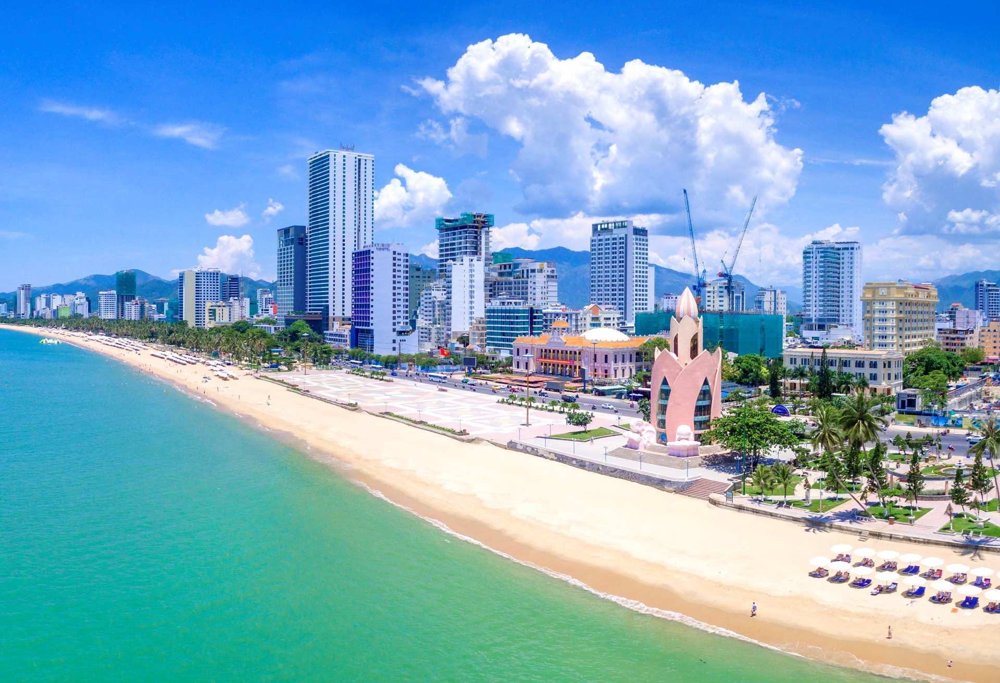
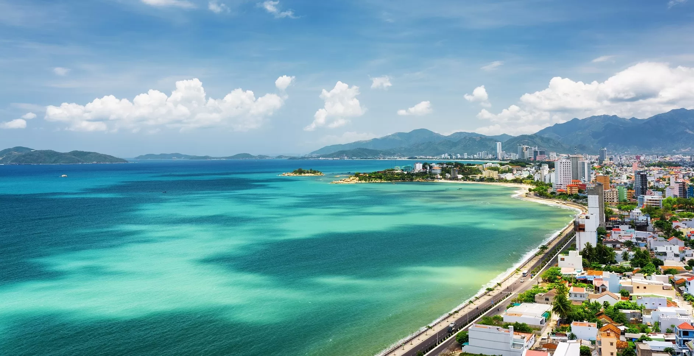
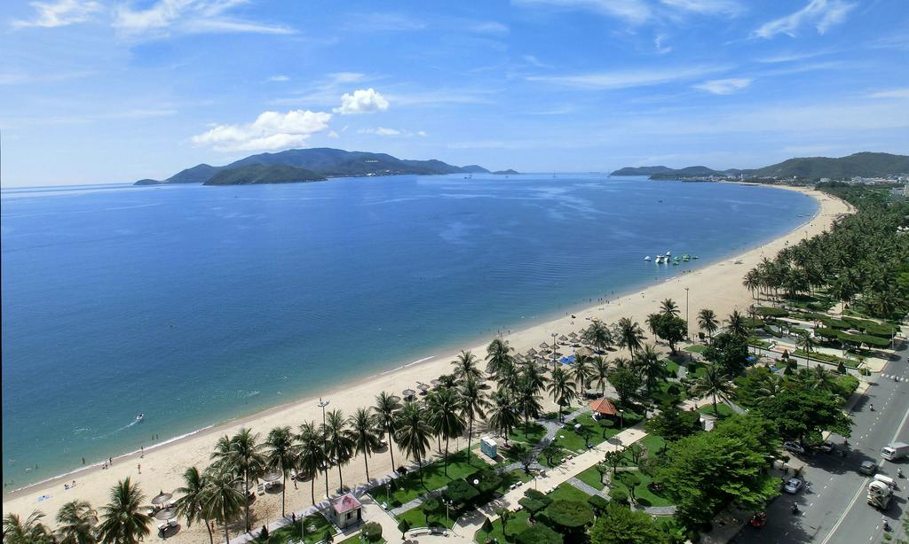
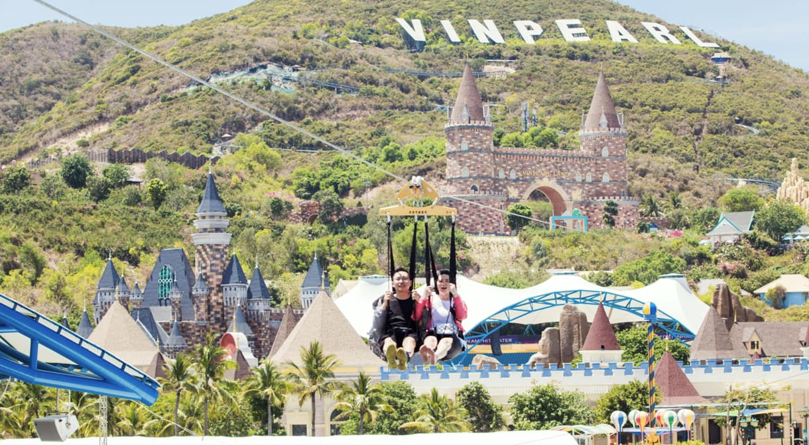
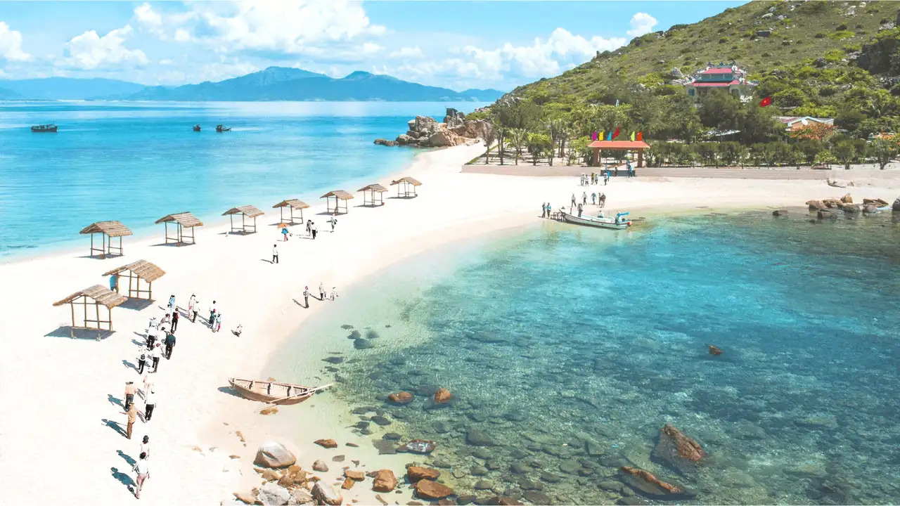

VinWonders Nha Trang
Công viên giải trí nổi tiếng trên đảo Hòn Tre, có cáp treo vượt biển và nhiều trò chơi hấp dẫn.
Thiên đường biển của Việt Nam

Nha Trang nổi tiếng với bãi biển trong xanh, những hòn đảo tuyệt đẹp, nền ẩm thực phong phú và nhiều địa điểm vui chơi hấp dẫn. Website này sẽ giúp bạn khám phá những điểm đến nổi bật nhất của thành phố biển xinh đẹp.
Khám phá ngay
Nha Trang là thành phố biển thuộc tỉnh Khánh Hòa, được mệnh danh là một trong những vịnh biển đẹp nhất thế giới. Với khí hậu ôn hòa quanh năm và bãi cát trắng trải dài, nơi đây luôn là điểm đến yêu thích của du khách trong và ngoài nước.
Website này được xây dựng nhằm giới thiệu những địa điểm nổi tiếng, món ăn đặc sản và các hoạt động du lịch hấp dẫn, giúp mọi người có thêm kinh nghiệm trước khi đến Nha Trang.
Không chỉ sở hữu những bãi biển đẹp, Nha Trang còn có nhiều công trình nổi tiếng, khu vui chơi hiện đại và nền văn hóa đặc sắc.
"Đến Nha Trang một lần để cảm nhận vẻ đẹp của biển, ở lại vì những trải nghiệm khó quên."
Công viên giải trí nổi tiếng trên đảo Hòn Tre, có cáp treo vượt biển và nhiều trò chơi hấp dẫn.
Di tích lịch sử lâu đời mang đậm nét văn hóa Chăm Pa, thu hút đông đảo khách tham quan.
Nơi lưu giữ hàng nghìn mẫu sinh vật biển, rất thích hợp cho những ai yêu thiên nhiên.



Từ tháng 2 đến tháng 8 là khoảng thời gian đẹp nhất để tham quan Nha Trang với thời tiết nắng đẹp và biển êm.